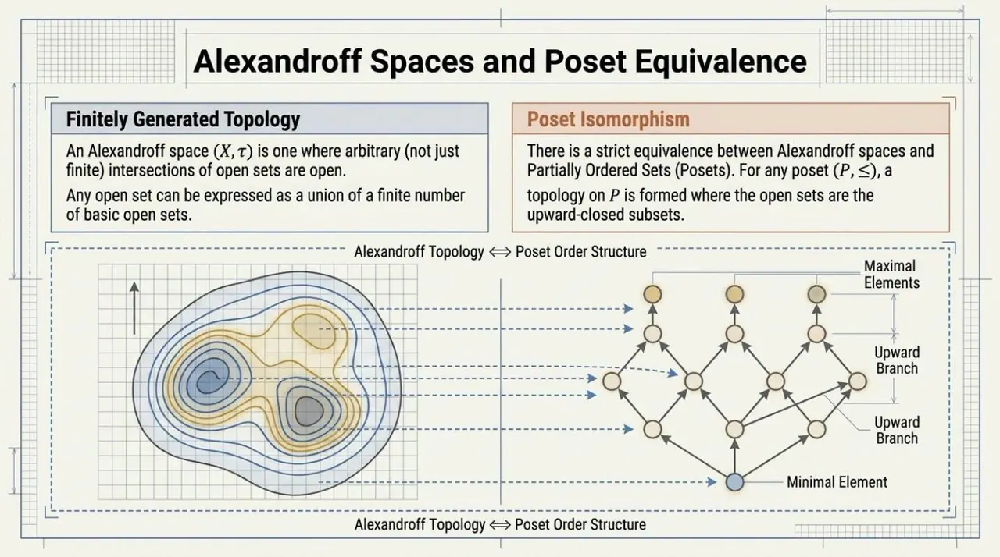
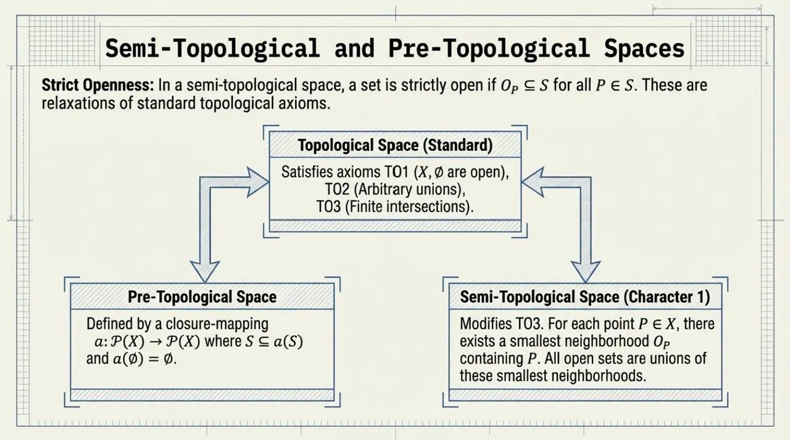

기둥 1 · 공간을 나누는 법 · 06장
순서로 만든 공간 — 알렉산드로프 공간
「가장 작은 이웃」이 있으면 위상은 곧 위아래 순서다
「가장 작은 이웃」이 있으면 위상은 곧 위아래 순서다
핵심 질문 — 모든 점에 「가장 작은 이웃」이 있는 공간은, 왜 위아래 순서 그림 하나로 다 표현될까?
05장의 칼림스키 직선에서 짝수는 양옆 홀수를 데려왔어요. 홀수를 위, 짝수를 아래에 두면 지그재그 순서 그림이 돼요. 이처럼 점마다 가장 작은 이웃이 있는 알렉산드로프 공간은 부분순서 그림과 정확히 짝지어져요. 마지막에는 위상의 규칙을 하나 느슨하게 한 공간도 살짝 봐요.
숫자 요약은 이 장의 예시 계산에서 나온 값입니다(실제 데이터가 아닌 설명용 값).
2조 발표 시작하겠습니다! 오늘의 주제는 「위상 = 위아래 줄 세우기」예요.
1조는 날카로운 질문 하나씩 준비하세요.
행렬·벡터, 복잡한 공식을 몰라도 됩니다. 그림을 움직여 보고, 밑줄 친 말을 누르면 뜻이 나옵니다.
이 페이지 사용법: 밑줄 친 말을 누르면 뜻이 나옵니다(Esc로 닫기). 단계마다 그림을 직접 움직여 보고, 끝의 확인 퀴즈로 점검하세요. 앞 장: 05 픽셀 세상의 연결 — 디지털 위상
2조(머그조: 모아·X2·X3)가 발표하고 1조가 질문해요. 발표 주제는 「위상과 위아래 순서는 같은 정보다」.
질문 준비했어요. 「위」와 「아래」는 누가 정해요?
…그건 내 발표 차례에 답할게.
점 n개 위상의 열린 집합 목록은 길지만, 순서 그림은 선 몇 개로 끝나요.
지그재그 = 홀수가 위, 짝수가 아래인 순서예요. 디지털 위상이 순서 이론과 이어져요.
교집합 규칙을 빼면 어떤 일이 생기는지 보면, 세 규칙이 각각 왜 필요한지 보여요.
「위로 닫힌」이라는 말이 처음엔 낯설어요. 「내가 들어가면 내 윗사람도 다 들어온다」로 읽으면 됩니다.
상황 질문 — 나를 포함하는 단톡방이 여러 개라면, 그 단톡방들에 「모두 들어 있는 사람」은 누구일까요?
01장에서는 교집합이 「유한 개」만 된다고 했잖아요. 이번엔 무한히 돼요?
학교 수학으로 보면: 집합 단원의 교집합이에요. 다만 여기서는 「이런 특별한 공간만」 무한 교집합까지 허락해요.
| 식 조각 | 읽는 법 | 뜻 |
|---|---|---|
| O_x | 오 엑스 | x를 담은 모든 열린 집합의 교집합 = 가장 작은 이웃 |
| ⋂ U | 모든 유의 교집합 | 조건을 만족하는 U 전부를 겹친 것 |
| 알렉산드로프 공간 | 무한 교집합도 열린 공간 |
칼림스키 조각 {0, 1, 2}: 열린 집합 ∅, {1}, {0,1}, {1,2}, {0,1,2}
점 0을 담은 것: {0,1}, {0,1,2} → 교집합 {0,1} = O₀
점 1을 담은 것: 4개 모두 → 교집합 {1} = O₁
점이 유한 개면 열린 집합도 유한 개 → 「무한 교집합」도 사실 유한 교집합 → 유한 공간은 모두 알렉산드로프
점이 유한 개면 저절로 알렉산드로프 공간이구나. 그럼 컴퓨터 속 공간은 다 해당되겠네요.
나를 포함한 단톡방(반 전체방, 동아리방, 단짝방)을 모두 겹치면, 그 모든 방에 다 있는 「가장 작은 모임」이 남아요.
알렉산드로프 공간에서는 x를 담은 열린 집합을 모두 겹친 가장 작은 이웃 O_x가 열린 집합이에요. 모든 열린 집합은 그 안의 점들의 O_x를 합친 것과 같아요.
위상을 「칼림스키 조각」으로 두고 점 0, 1, 2를 차례로 골라 보세요!
점마다 이웃이 같겠죠. 다 같은 공간이니까요.
점 0과 1의 가장 작은 이웃 크기를 비교해 봐.
원자료 「Alexandroff Spaces and Poset Equivalence」 왼쪽 위 상자: 임의(무한) 교집합이 열린 공간.

상황 질문 — 「수학 1을 들어야 수학 2를 들을 수 있다」 같은 선수 과목표가 있다면, 이 표를 위상으로 볼 수 있을까요?
「위로 닫혀 있다」를 식으로 쓰면 어떻게 돼요?
학교 수학으로 보면: 중학교 부등호 ≤와 같은 「크기 비교」를 점들 사이에 정한다고 보면 돼요. 다만 모든 점끼리 비교되지 않아도 괜찮아요(그래서 「부분」순서).
| 식 조각 | 읽는 법 | 뜻 |
|---|---|---|
| x ≤ y | 엑스는 와이 아래 | 그림에서 x에서 위로 선을 따라가면 y |
| S가 위로 닫힘 | x ∈ S이고 x ≤ y이면 y ∈ S | |
| ↑x | 엑스의 위집합 | x와 그 위의 모든 점 = O_x |
그림: d 위에 a, b / e 위에 b, c
{d}만 고르면? d 위의 a, b가 빠짐 → 열린 집합 아님
{d, a, b}: 위쪽 모두 포함 → 열린 집합(= ↑d)
{a, b, c}는 맨 위 점들이라 그대로 열린 집합
열린 집합을 모두 세면 13개 (단추로 확인)
열린 집합 목록을 외울 필요 없이, 선 4개짜리 그림만 있으면 되는 거네요!
선수 과목표에서 「수학 1을 듣는 사람은 그다음 과목들로 이어질 수 있다」처럼, 아래 과목에서 위 과목으로 화살표가 이어져요.
부분순서 (P, ≤)에서 「위로 닫힌 집합」을 열린 집합으로 삼으면 알렉산드로프 위상이 돼요. 반대로 알렉산드로프 공간에서는 「y ∈ O_x이면 x ≤ y」로 순서를 만들 수 있어요. 점을 구별할 수 있는(T0) 공간이면 이 대응이 일대일이에요.
점 d 하나만 눌러 보고, 판정 문장을 읽어 보세요.
…위쪽 점을 모두 데려오니까 판정이 초록으로 바뀌었어.
그럼 맨 위 점 하나만 고르면? 데려올 위쪽 점이 없지.
원자료 오른쪽 위 상자와 아래 그림: 왼쪽 등고선 지형 ↔ 오른쪽 순서 그림(극대·극소 원소, 위로 가는 가지).
상황 질문 — 동아리 목록 규칙 세 개(01장) 중 「겹친 모임도 목록에」를 없애면, 어떤 목록이 새로 허락될까요?
「겹친 모임도 목록에」라는 규칙이 없으면, 축구부와 농구부는 있는데 「두 부에 다 든 사람들의 모임」은 목록에 없을 수 있어요.
합집합 규칙은 지키지만 교집합 규칙을 빼면 「반위상」, 닫힘 연산 a(S)가 S를 포함하고 a(∅) = ∅만 지키면 「앞위상」이라 불러요. 둘 다 위상의 규칙을 느슨하게 한 것이에요.
…발표 마지막. 「합집합만 되는 예」를 눌러 봐.
규칙 2개면 반은 위상이네요! 반값 위상!
그 「반」에서 무엇이 무너지는지가 중요해. {2}가 왜 없는지 봐.
원자료 「Semi-Topological and Pre-Topological Spaces」: 표준 위상, 앞위상(닫힘 연산), 반위상.

시아가 AI에게 「점 3개 집합 {a, b, c}의 위상은 모두 알렉산드로프 공간인가요?」라고 물었어요.
조건이 「모든 ~에 대해」 꼴이면, 해당하는 경우가 적거나 없을 때 오히려 쉽게 성립해요. AI가 이 방향을 거꾸로 말하는 일이 종종 있어요.
홀수 1이 위, 짝수 0과 2가 아래인 지그재그 순서 그림에서 열린 집합(위로 닫힌 집합)이 몇 개인지 계산배틀!
「5개. 위로 닫힌 것만 세야 해.」
「점 3개니까 부분집합 8개 전부요!」
누가 맞을지 먼저 예상해 보고 단추를 누르세요. 판정은 계산 결과로만 합니다.
개념정리 흐름: 알렉산드로프 공간과 가장 작은 이웃 → 순서와 위상의 짝 (위로 닫힌 집합) → 반위상과 앞위상
| 개념 | 한 줄 뜻 | 일상 비유 | 비유의 한계 |
|---|---|---|---|
| 가장 작은 이웃 | 점을 담은 열린 집합을 모두 겹친 것 | 단짝 모임 | 수직선처럼 연속인 공간에는 없음 |
| 알렉산드로프 공간 | 무한 교집합도 열린 공간 | 단짝 모임이 정해진 반 | 유한 공간은 모두 해당 — 연속 공간은 대부분 해당 안 됨 |
| 부분순서와 위상 | 열린 집합 = 위로 닫힌 집합 | 선수 과목표 | T0일 때만 일대일, 위·아래 약속은 책마다 다를 수 있음 |
| 반위상 · 앞위상 | 규칙을 느슨하게 한 공간 | 규칙 빠진 동아리 | 이름과 정의가 분야마다 다름 (출처 확인 필요) |
2조 발표 평가: 그림과 숫자로 주장을 확인했어요. 아주 좋았습니다.
와, 칭찬받았다! X2, X3 고생했어!
1조 질문 「위아래는 누가 정하나」의 답 — 가장 작은 이웃이 정한다. 잘 기록했어요.
8개라고 한 건… 부분집합 수였네요.
다음 장 예고: 07장에서부터는 기둥 2 「무리가 공간을 움직이는 법」이에요. 수강생들이 직접 「도장」이 되어 움직이는 역할극 수업!